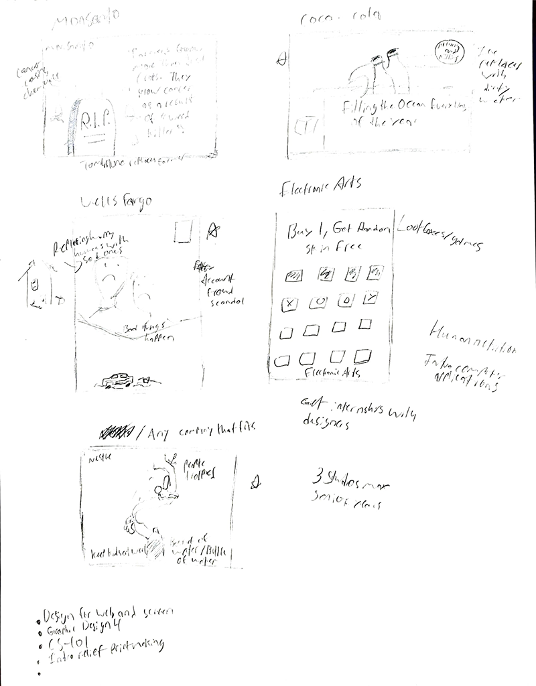
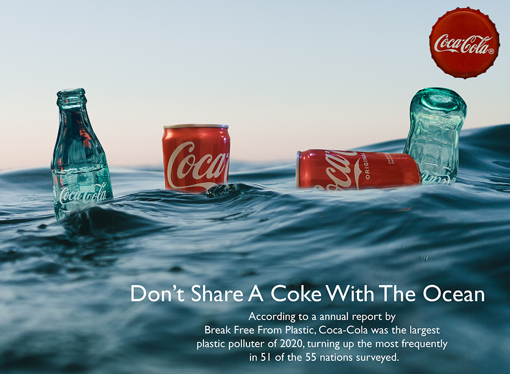

This was a culture jam I made to highlight how Coca-Cola was the
largest plastic polluter in 2020. The overall design was based off of
Coca-Cola ads in the 1940s, which depicted Coke products sitting in snow.
The Ideation
I created only 5 sketches for the culture jam, since there are
only so many companies to make jabs at that warrant it.
The Finish Line
After narrowing down three sketches and creating mock-ups, a concept based on growing hoses was chosen for the final spread.